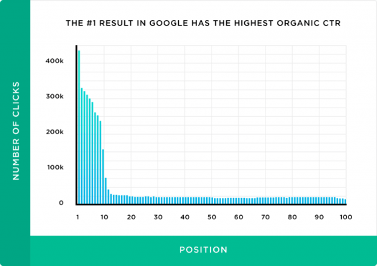

In SEO, ranking refers to your content’s position on the search engine results pages. A #1 ranking means that when people search for a particular term, your webpage is the first organic result.
Appearing on the first page (within the top 10 results) is essential because 95% of people never make it past the first page.
